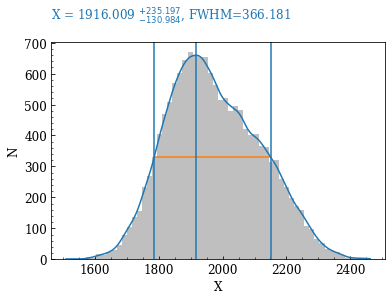

Welcome to kdepeakprops’s documentation!¶
Brief description¶
Estimation of KDE peak properties: FWHM and its upper and lower bounds.
It takes a 1D array of values and returns two arrays. One (1D array) with the KDE peak properties (value,FWHM, upp, low) and another (2D array) with the KDE samples.
Contents¶
API main¶
-
kdepeakprops.kdepeakprops.kde_props(x, nbins='doane', n_samples=1000, show=False)[source]¶ Estimation of KDE peak properties: FWHM and its upper and lower bounds. It uses the scikit-learn KDE estimator.
- Parameters
x (array_like) – The 1D data array.
nbins (int or str, default: 'doane') –
Number of bins to generate histogram and scale the KDE cernel. If a str, it must be one of the numpy.histogram_bin_edges bin calculation algorithms: auto, fd, doane, scott, stone, rice, sturges, sqrt.
Details in numpy.histogram_bin_edges: https://numpy.org/doc/stable/reference/generated/numpy.histogram_bin_edges.html.
n_samples (int, default: 1000) – Number of samples for the KDE
show (bool, default: False) – Plot the result
- Returns
kde_peak_prop (1D array) – The properties of the KDE peak value, FWHM, upper and lower bounds.
kde_xy (2D array) – The KDE samples for manual plotting.